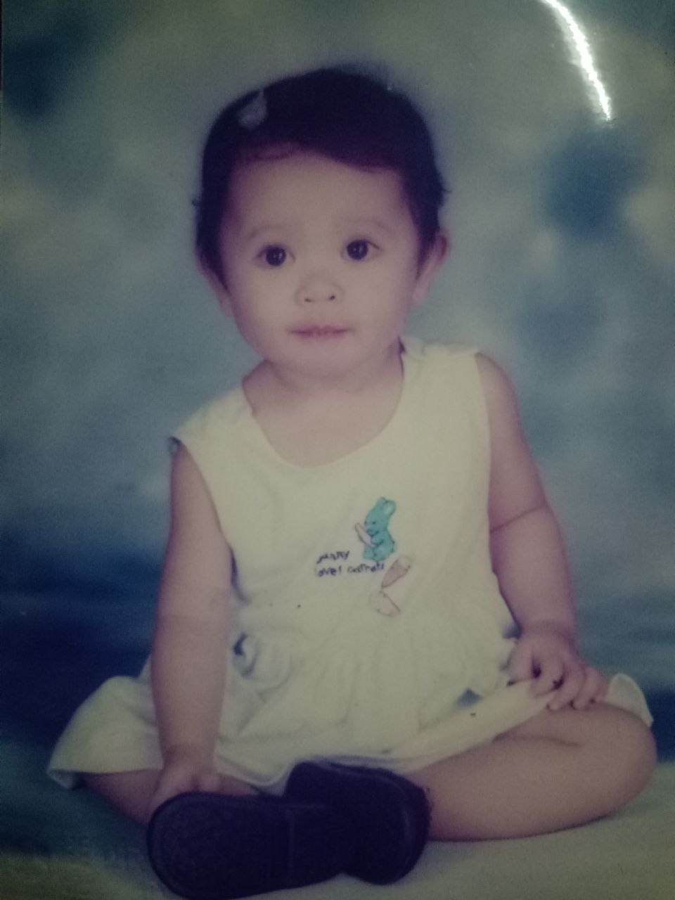
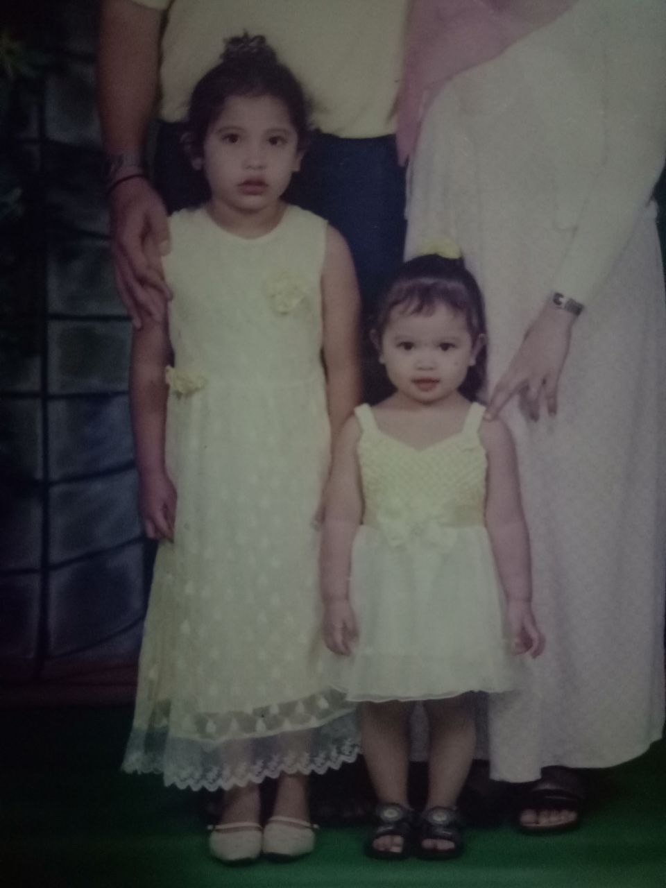
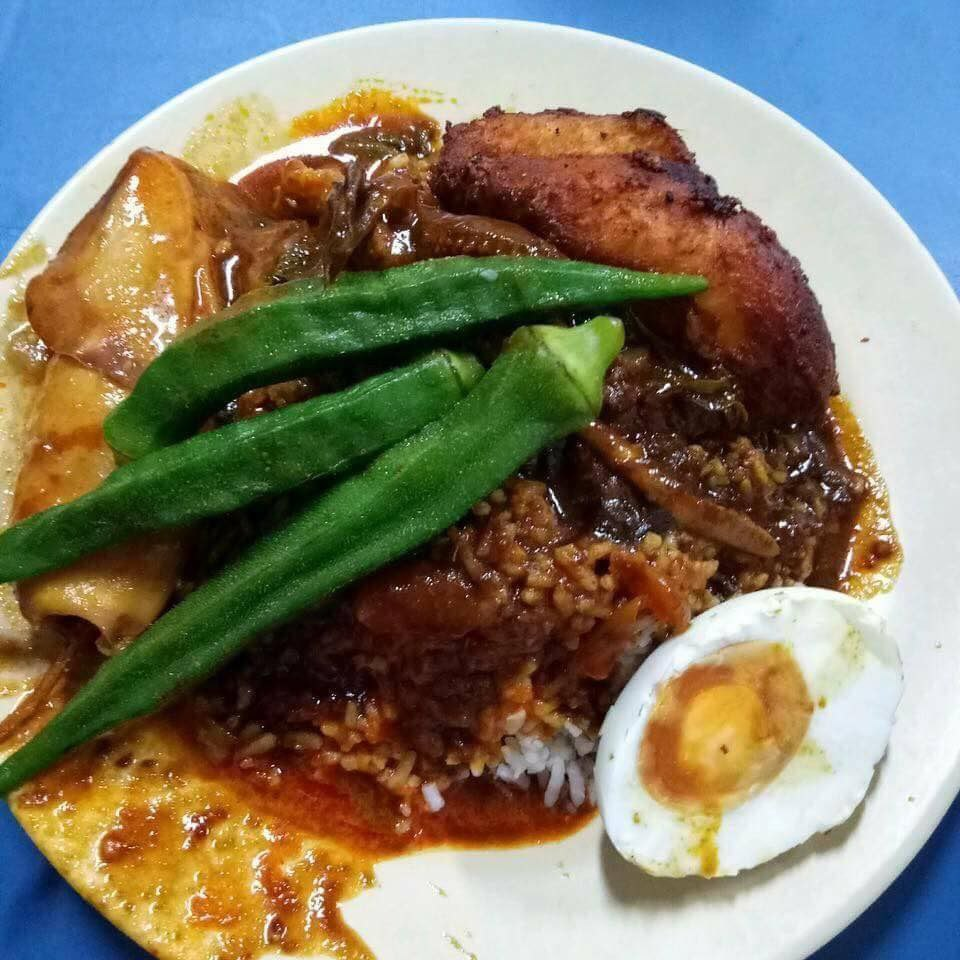
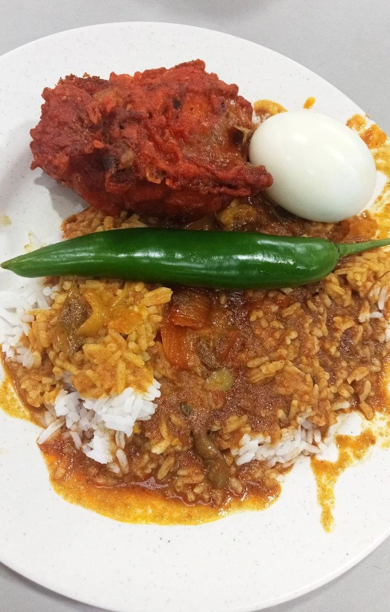
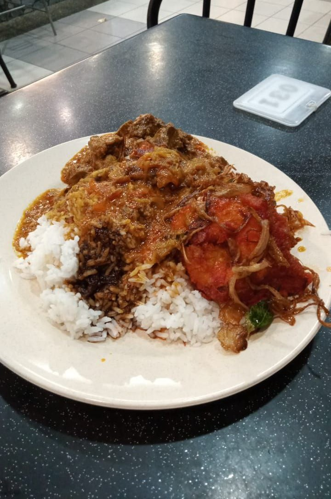
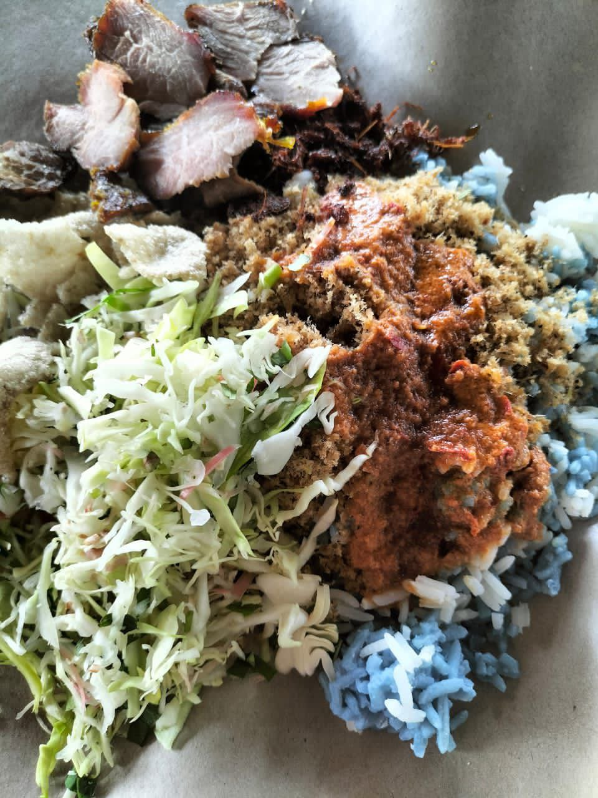
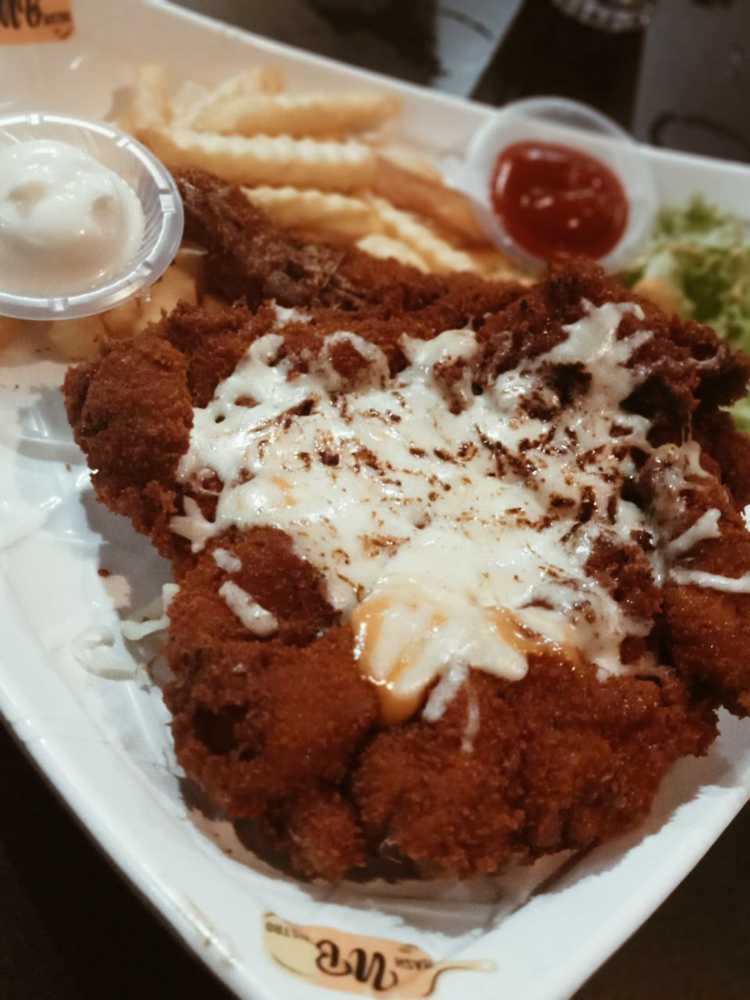
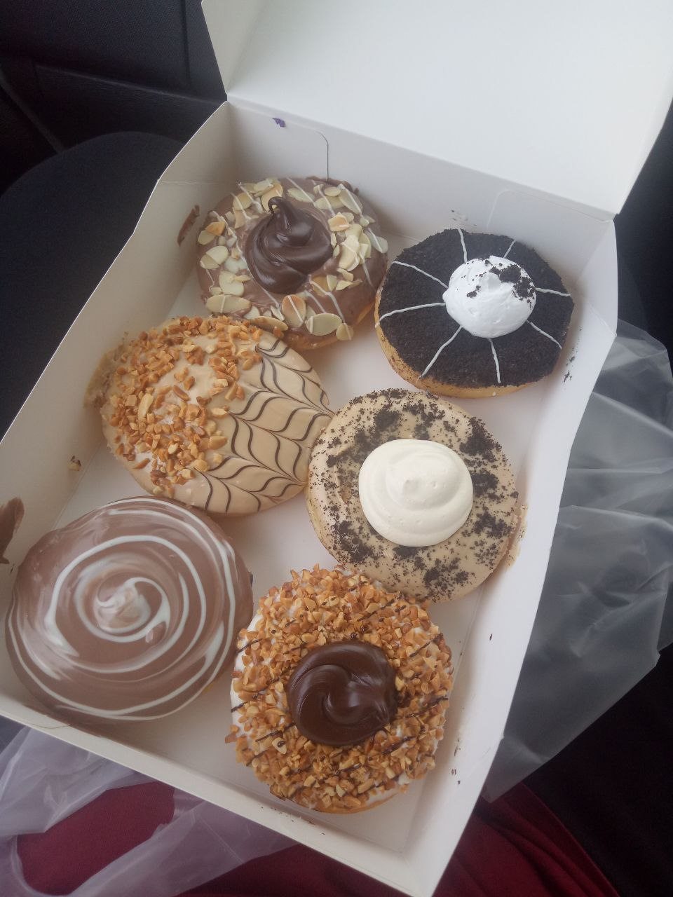

Get to know the web creator
In case you missed it from the video.
>> My name is Nursuhaida Binti Rohaizam and most people call me Aida. While we're talking about it, I actually have a lot of nicknames such as Su, Ai, Eda, Didi and some more which is more affectionate or adorable where my family calls me. (let's not talk about that)
>> I am 21 years old and I was born on 27th December 2002. Yup born in December I never really celebrate my birthday at school since it was always school holidays at that time. Not that i mind too much tho since my dad's birthday is on the same day as mine. I love my family and they are the most important thing to me so, celebrating with them always feels right and it does make me happy and grateful for having them in my life.
>> I'm currently studying at Universiti Teknologi Mara (UiTM) Sungai Petani, Kedah. I'm in the fourth semester of my diploma journey under the course IM144. To know more about my education, you can visit the education section here
>> I'm from Penang, Malaysia. Growing up in penang is amazing. There's variety of foods that are SO GOOD, amazing buildings that looks historical, the tradition, the dialect, the people that I met, and places that are beautiful. (espcially the beaches.)
>> My goals in life is to be a good person that can support myself and my family. Well, in other word I want to be rich and independent. I want to be able give my family, especially my parents things that they want and I also want to do things that I always dream of such as getting a car, an apartment, travelling around the world before I settle down. Then again, outsiders might see it as just a dream but I'll make it as my goal instead so that I could have some motivation.
Enough with these boring texts, let's look at some picture shall we?
oh look! it's younger me ^^
I was quite cute wasn't I? well sadly we change as we grow older
the other pic is me with my older sister


My favourite food is Nasi Kandar, well I guess you should have know that since I live in Penang, Look! Doesn't it looks good?



Other than Nasi Kandar I also like some other food such as Nasi Kerabu, Chicken Chop, Donuts, Ramen and many more.



Fun fact about me, I wanted to be a teacher when I grow up. It was a good ambition until I was older that I realize. I actually do not like school very much. I don't think I could go to school everyday for the rest of my life hahah but that's the thing. When I figured I don't want to be a teacher anymore, I also realized that I have no other ambitiob than that. My goal is to live a comfortable life yet I don't have an ambition? Yeah I'm just going to go with the flow until I actually find something I really want to do. For now, being a library student is not that bad, I love books and I love quiet places.
However, just because I love quiet places does not mean I'm that much of a boring person. Yes, I admit it I am quite boring cause I am an introvert person but I am a really good listener. A lot of people have said that to me and I myself do prefer to listen rather than talk. It depends too, if I'm with someone who is more introvert than me I will try to talk more so that they could open up to me and be comfortable. I will try my best to be kind to others so that I will receive the same treatment, and even if I don't it does not hurt to be kind to others. Of course, I myself too have bad days sometimes and I can get annoyed with people very suddenly but I will try my best to control it by not talking to anyone or distance myself.
Fun fact about me, one of my favorite thing to do is watching sunset. I find golden hours or pink hours really beautiful and mesmerizing. Just watching the sunset and sit by the beach is the best thing that could calm me down. I can sit there for hours but sadly sunset only last for awhile. Also moon. I love stars and moon as you can see from the wallpaper. I can stare the moon for HOURS. It's very pretty. If I have a partner, going to dates such as beach dates and star gazing would definitely makes me happy. As I said, I can be happy just because of a small things and I do appreciate a lot of things and even the smallest effort. Well that talk is not really relavent tho cause I do not have any partner. But anyways, here are some pics of the moon and the sunset that I took
| Phone Number: |
+60131093719 |
| Facebook |
Suhaida Rohaizam |
| Instagram |
@aidadonewithyou |
| Email |
suhaidarohaizam5@gmail.com |